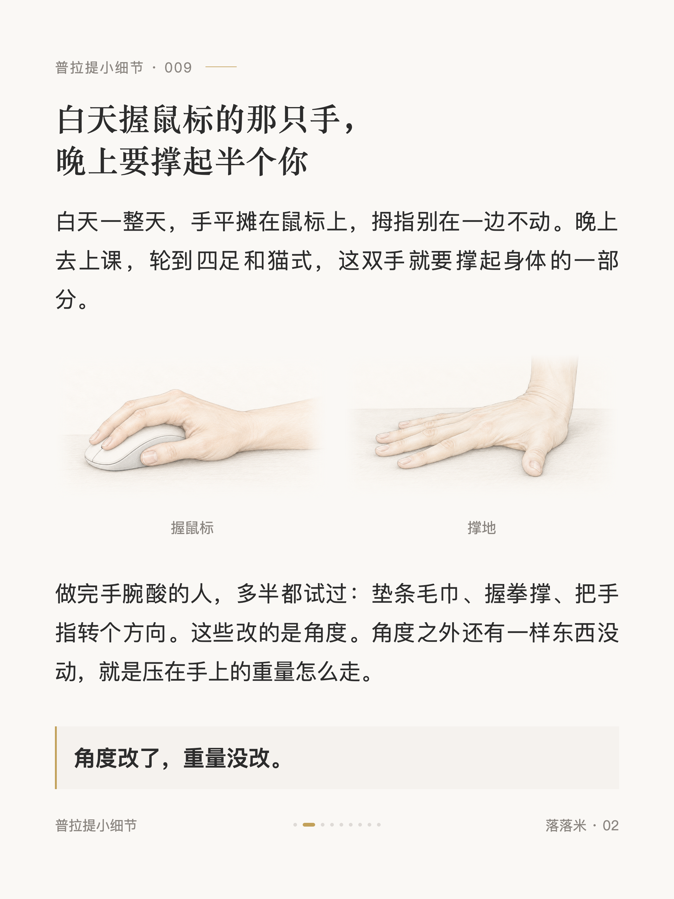
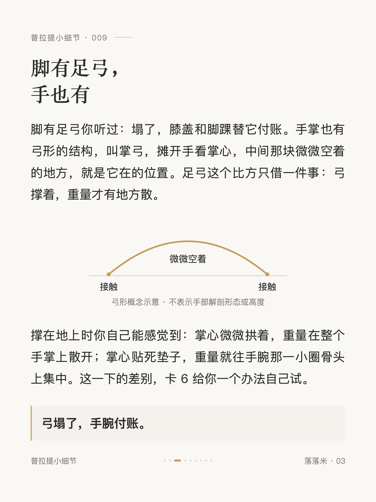
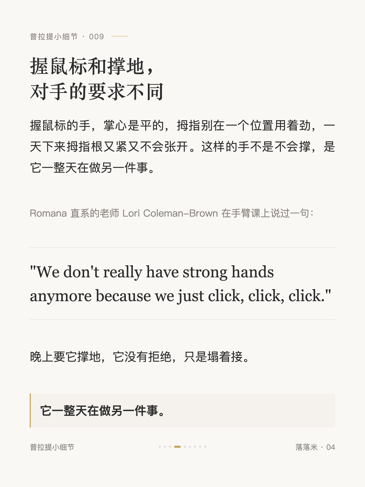
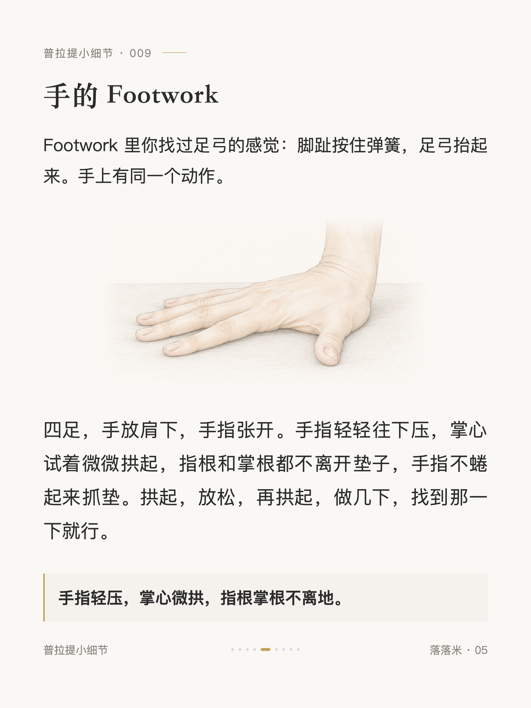
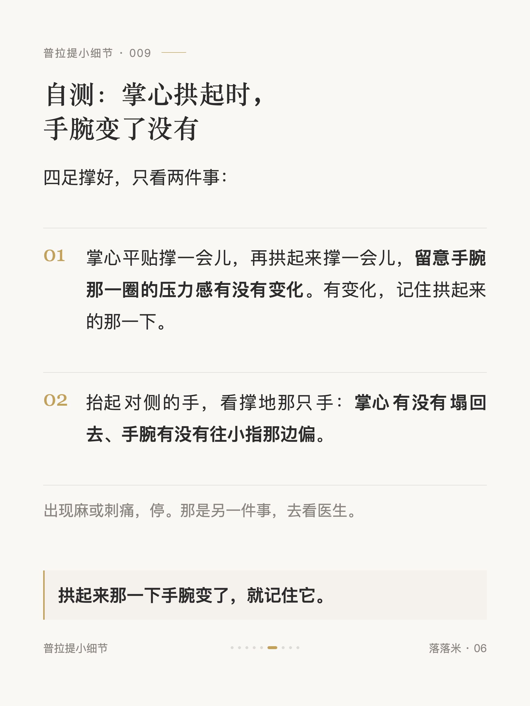
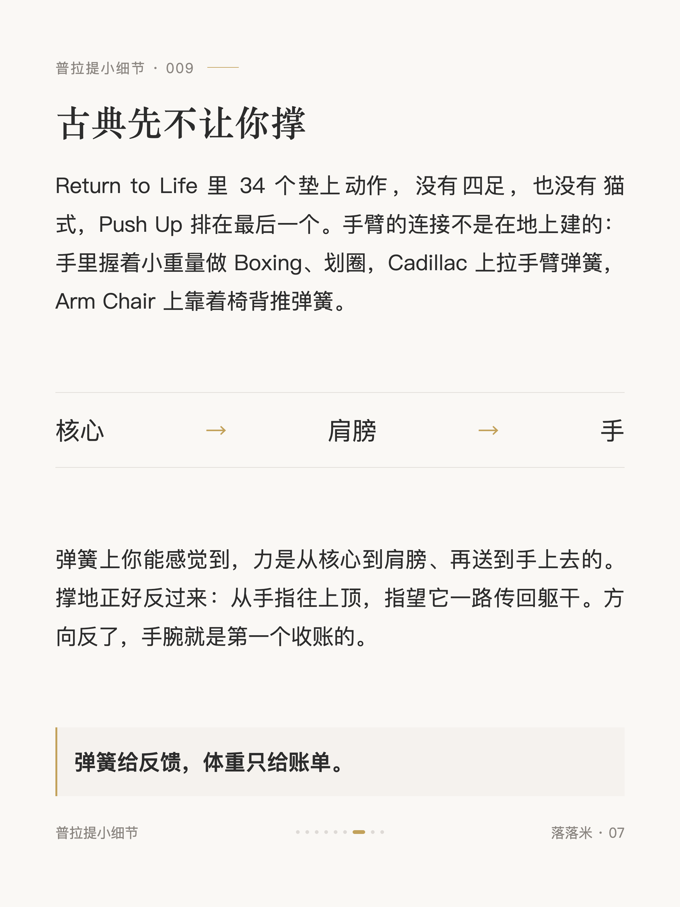
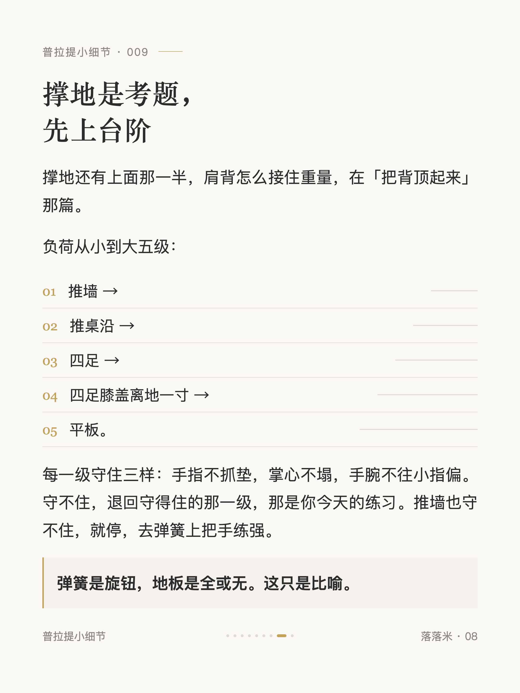
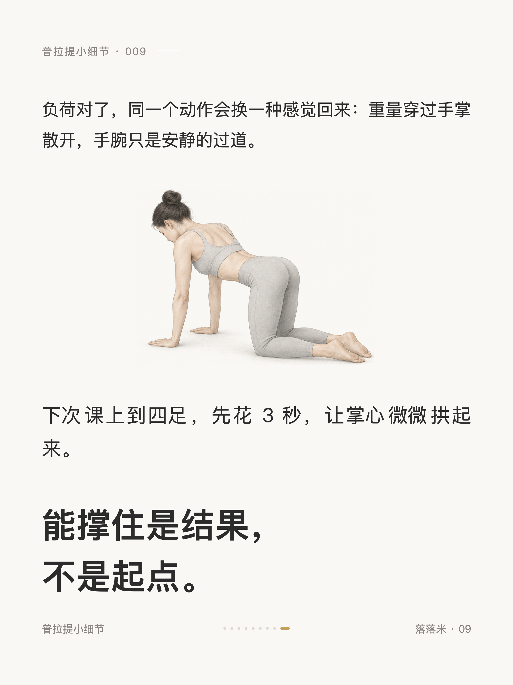

普拉提小细节 #009
鼠标手做普拉提，先看手的足弓

1 / 9

2 / 9

3 / 9

4 / 9

5 / 9

6 / 9

7 / 9

8 / 9

9 / 9
← 左右滑动浏览全部卡片 →
先交代：我练古典大半年，手腕没疼过。我的判断是顺序的功劳，古典里手臂先在弹簧上干活，垫上较大的支撑负荷排得很靠后。不过写这篇的时候跟着视频练了两下，本来觉得自己鼠标手还好，结果手腕会弹响，也不算多灵活。
脚有足弓，塌了膝盖脚踝付账，这个大家都知道。手掌也有弓，握了一天鼠标的手掌心是平的，晚上四足一撑容易塌着接。垫毛巾、握拳、转手指改的是角度，角度之外还有重量怎么走。卡片里有手上的那一下 Footwork 和一个四足自测；也说了古典为什么先不让你撑，手臂的连接是在弹簧上建的；最后有五级负荷顺序，找到你今天该待的那一级。
（麻和刺痛不在本篇，那是另一件事，去看医生。）